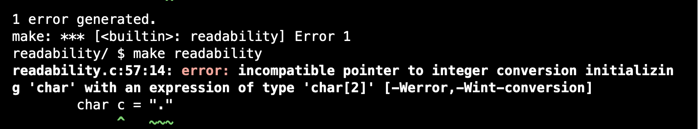
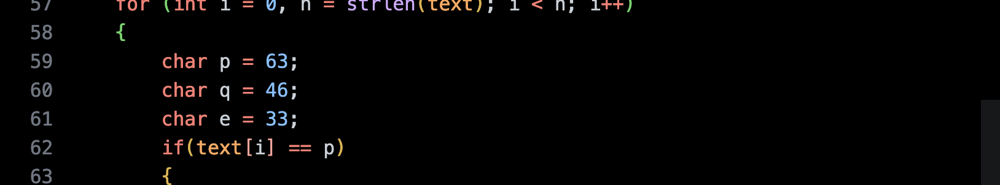
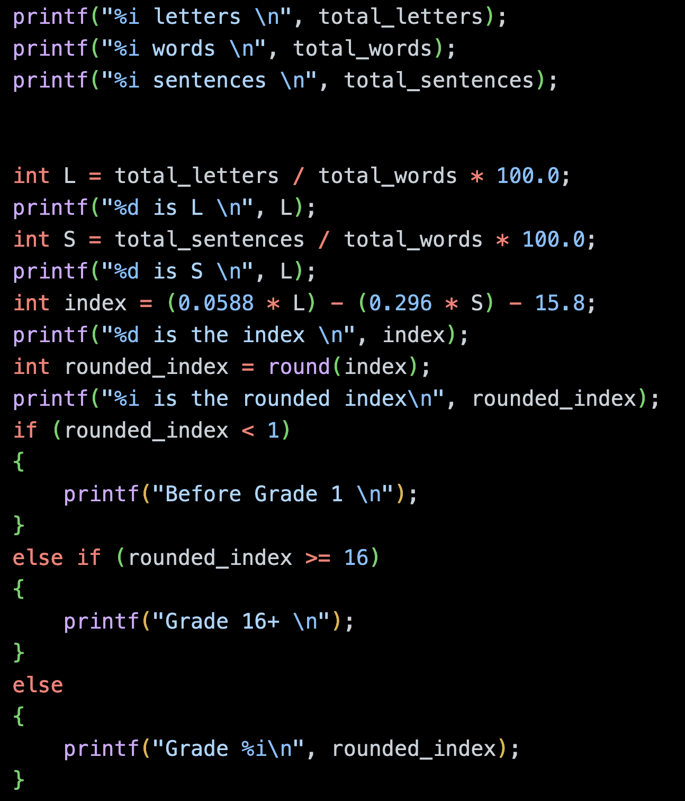
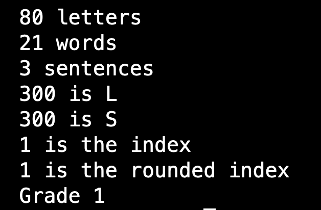
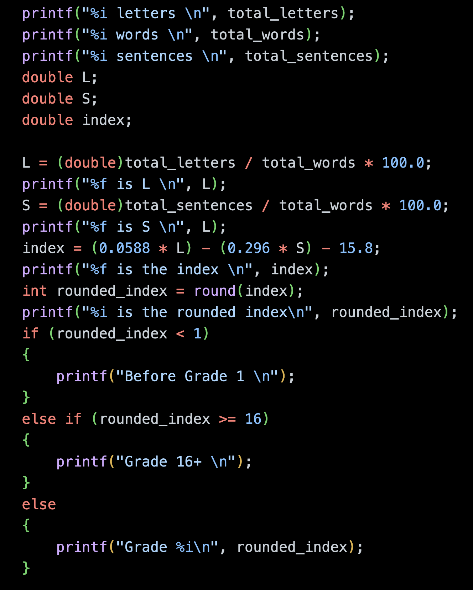
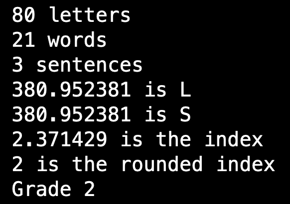
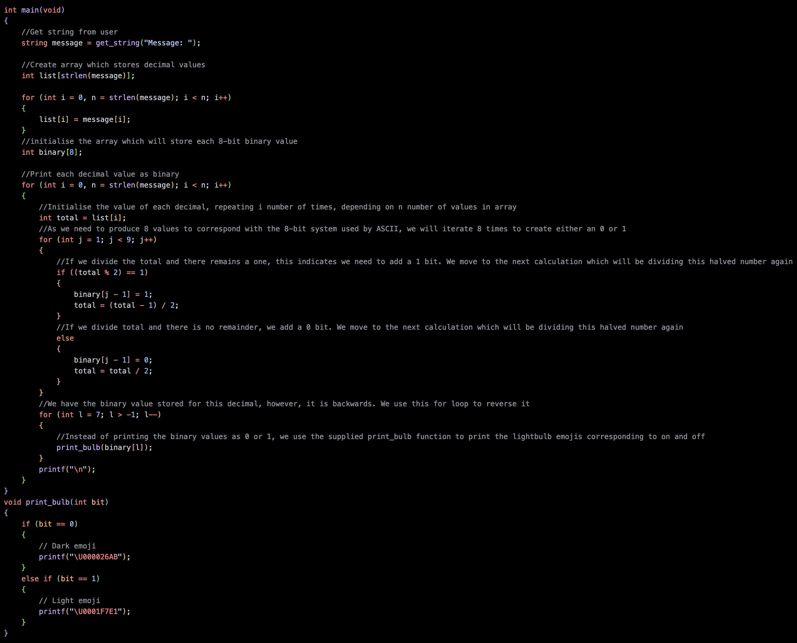

Tuesday, 17th of January 2023
An Awry Array
In week 2 of edX's CS50x, we returned to our study of the programming language C. This week we took a deeper look at the building-blocks of computers and how a programming language works from the bottom up.
I went into this week confidently after last week's success but struck the wall in the last problem set. I will explain in detail later however I learnt many things - not just about that particular problem set - but also how to approach issues more generally.
We started the week returning to the concept of compiling. In Week 1 we had used been using the make utility to 'compile' our source code. This week we learnt that this utility is not actually a compiler, rather, it is a command which executes the compiler for C, called Clang, along with some arguments pre-programmed by CS50x.
I did some research of my own to better understand this utility. I discovered outside of the Integrated Development Environment provided by CS50, the make utility needs a makefile to provide the process with the necessary instructions and commands.
I recalled I used a Makefile when I completed the Cloud Resume challenge. You can read about my Cloud Resume here. This file was used by Amazon Web Services Serverless Application Model (AWS SAM), which is a Command Line Interface tool which can build serverless applications on AWS. The Makefile was used to automate the building process when we pushed our code from Github to AWS. Several macros were stored in the file and each one provided AWS SAM with one or more commands, along with any dependencies, which needed to be executed by the compiler. I still don't have a complete grasp of how it works, but being able to link this concept to a previous project strengthened my understanding.
To push this thinking even further, this realisation also gave me a better understanding of how AWS SAM works as well. Effectively, running this tool packages your files in a format with can be understood by the AWS Cloud infrastructure. In other words, we are compiling the code from source code into AWS Cloud machine code.
Back in this week's learning, we investigated the stages that a compiler like Clang goes through.
First is preprocessing. This involves transferring header files into the source code which is to be converted.
Second is a step, also called compiling. In this step, the program is converted into assembly code. This is where architectures like x86 and ARM begin to differ.
The third step, assembling, transforms assembly code into machine code (binary, i.e. 0s and 1s).
The final step, linking, converts the code from included libraries and combines it with the program's machine code. From this point the executable file is outputted. From my experience, the final result is often called the binary of a program. I had trouble understanding what this mean in the past, so I'm glad for the clarification.
Perhaps as some foreshadowing from our teachers of what lay ahead with this week's problem sets, we were told about the inevitability of writing mistakes, or bugs, when coding. We were then provided with some debugging techniques to eliminate these errors.
The first involved printing variables often as a way of checking the values stored by variables at certain points of process.
A more sophisticated tool we were shown was the in-built debugger in our IDE which allows you to set breakpoints in code, keeps track of the values of each variable and control the flow of the program with Step Over a breakpoint button, and the Step Into and Step Out (of a function) buttons.
In my AWS bootcamp, which included a week spent on Python, we learnt how to use this debugger. However, I have been reticent to use it because in my past coding experiences, I have managed to eliminate bugs with either the printing technique or through a 'brute force' method of staring at my code hoping for a revelation. I was glad for this refresher and needed to have my eyes opened to its benefits again. However, it was not until I encountered the roadblock at the end of this blog post that I allowed them to fully open.
A third technique were taught was 'rubber-ducking'. This involves talking through problems with someone else, and in the absence of a living person, turning to an inanimate object. The concept is that by talking through your code line by line helps trigger the light-bulb moment when you come to something that sounds illogical.
We then returned to the concept of data types touched on in Week 0. In this week, we learnt how these different types utilise system resources.
We then used a diagram overlaid an image of a memory chip to visualise how data is stored in memory. In this grid we saw that each data type takes up a different amount of space in memory.
We then considered how three variables in a program would be stored in memory. We learnt they would be stored consecutively.
We were then taught about arrays which follows the same principle. An array is a way of storing data together in a way that makes it more accessible to the program. Despite linking the data together however, in memory, it's treated in a similar way as if the data was seperate variables and takes up the same amount of space.
Building on this, we learnt that strings aren't really their own data type. They're actually arrays of one-byte char(acters). The one difference between a string and a typical array is the presence of an unusual zero character at the end of strings position in-memory. This char is called the NUL character and it occurs in the language C as an indicator of when a string ends and another begins.
We then learnt about different C libraries and some of their useful functions that we can draw on by including a call for the library in the header of our program. Some useful functions include the get_string() function from the cs50.h library, which turns user input into a string, and the strlen() function from the string.h library, which measure the length of a string, excluding the NUL character.
We finished the weeks lecture by returning full circle to a discussion about how command line arguments that can be used by commands, like make and Clang can also be used with our programs.
In all our C programs so far, we have been starting our programs in this fashion
#include < studio.h >
int main(void)
In this example, the void specifies that the command to run the program, doesn't take any command line arguments.
However it is possible to specify your program to need arguments!
This can be done with this opening, with void becoming…
int main (int argc, string argv[])
Argument count (argc) is the number of command line arguments given by user, and Argument Vector (argv) is an array of the characters passed as arguments, (notably including the program command as one of the arguments). This can be used to load programs with values without the need for responding to prompts, making the process of running programs much more convenient.
The last topic we covered were exit statuses. We learnt these can be used for automating testing of code or determining if a program has succeeded or failed. This explains why we’ve begun all our program with int main. It is because when the program finishes, as is necessary for all variables in c, to specify the data type of the value which will be returned.
In our programs, as we haven't coded any value to be returned, the 0 status, meaning success, is what has been returned. We learnt how we can instead build our code to be fault tolerant, in so much as if there is an error in input for the program, the program returns a value, ie 1, indicating the error. This can be implemented to stop a program running completely when an error is detected, saving time and restarting correctly faster. This final bit of teaching helped me to understand how error codes - of which we all are probably familiar - are produced.
Problem Sets
The first lab was the easiest task for the week. We were supplied an array called POINTS and we tasked with calculating the Scraable score for any word inputted by the user. It was quite an easy task and involved us matching each letter with their corresponding position in the 26 value points array. The trick was treat all values of the text as either all uppercase or lowercase, it didn't matter which, so long as they were the same. From there, you convered the string characters to their decimal value, and then subtracted the decimal number which was the postion of either the capital A or lowercase a on the ASCII chart. From there, that number could be used to call the corresponding position in the POINT's array.
This week's first problem set tasked us with finding the reading level of any given text using the Coleman-Liau index.
This index is designed to calculate the reading level of any given text by runnings some tests to find the average numbers of letters per 100 words and the average number of sentences.
The formula used is 0.0588 * (Average letters per 100 words) - 0.296 * (Average sentences per 100 words) - 15.8
This problem was straightforward and relied on implementing methods seen in the lecture. We were again tasked with getting user input with get_string. Next steps involved calculating the number of letters, words and sentences. This was done by creating three functions - one for each task - which were called inside the main function but defined outside of it.
The first error I encountered was in the final function, when trying to count the number of sentences. We were permitted to count every instance of a period, question mark or exclamation as the end of a sentence, even if a period occurred after mister in somebody's name.
I encountered this problem as I was looking through the text for strings that looked like “.” Or “?” “!” because the syntax of C did not permit to place those symbols without quotation marks. Unsurprisingly, I found no instances of these strings in the text.

I reached the solution by comprehending again the ability of C to transform a string of characters into a string of integers which retain their values in an 'encrypted' form. This was how the Scrabble solution in the Lab was achieved, but I had forgotten it could apply symbols as well. This is possible because all ASCII characters can be represented by a decimal equivalent (event the digits 0 through 9!) established when the standard was designed. In order to find the number of sentences in each text, I head to look for matches of the decimal value of the period (p), question mark (q) and exclamation mark (e) symbols .

Following these three functions being called to count the numbers of letters, words and sentences, we then needed to plug these values into the Coleman-Liau index to evaluate the reading level of the text.
This was also reasonably straight-forward but in its process there was a deceiving error that came up which would not be noticed were it not for the keen eye of CS50's robotic assessor.
The error would appear even if the correct averages were calculated, and the formula was written correctly. I thought I had everything correct, and when I checked my answers with the provided tool, I was receiving incorrect reading level for a number of the sample texts.

The above code resulted in the following output, with the averages both coming incorrectly to 300, and the subsequently incorrect reading level of Grade 1. The error comes from initialising the L, S and index variables as integers, not as doubles or floats.

I used the printing technique to check for bugs, alongside using my calculator, and pinpointed where my errors were arising. The calculation of the averages was were I was going wrong, and this ended up being due to using the wrong data type. I learnt that in C, when an integer is used to divide another integer, the answer supplied is the nearest whole number, another integer. This was imprecise as this value was not my final answer and affecting my final results in some cases. I learnt in order to maintain as much precision as possible, to convert one of the values at least into a float, which stores values with decimal places. Once I included this requirement in my code, all sample texts were attributed to the correct reading level.

The above code resulted in the following output, with the averages both coming correctly to a decimal number, and the corresponding correct reading level of Grade 2.

The second problem set for this week was substantially more difficult for me. I chose the 'bulbs' problem, which asked us to write a program which could convert messages into binary. It sounded simple enough but as I soon discovered, this was problem set to test our understanding of the weeks topics - data types, in-memory, and arrays - and push that to it's limit.
The initial stages of the problem went smoothly. I begun by trying to turn the user inputted text into decimal.
An easy step, I achieved this by initialising an array of integers of length determined by text length. By initialising the array to be composed of integers, I handled the transformation of the string chars into ints automatically.
I inputted the decimal values of the text by using a for loop that iterated the same number of times as the string length, and for each i value, placing the character in in the string's i position, into the decimal array's i position.
The next step - transforming the decimals into binary - stumped me and I was at my desk for hours before the solution came to me after dinner. The first part of this step took a little time but I did make progress.
I intuited that a for loop would be required to perform this task for each decimal value; and that another for loop would be needed, this one with eight iterations, for each of the values in an 8-bit binary value. We had nested for loops in Week 1, so I knew it was possible.
I was able to establish a method for calculating whether each value in each bit was turned on or off, or a 1 or 0. I did so by dividing (with the % sign) the total value of the decimal by two for each bit, from right to left, and placing a 1 in all the positions when I remainder of the division was 1.
However, because this worked when starting from 1 (20) and moving through the values to 128 (28), or from right to left, when I went to print the values, the first value which was printed was the rightmost, and so on, meaning the binary values were in reverse order
I even managed to deduce that what I needed to do was store these values in another array, and iterate backwards through these values to print them correctly.
While this seemed intuitive, and ultimately was possible, this was the roadblock. Perhaps I had been in front of the screen too long, for what ultimately was an easy solution proved very difficult to achieve.
The issue I faced? Wrangling the eponymous array so that I could access the data outside of the for loop from which it derived it's values. Initially, I did not realise this could be a problem. No matter how many different ways I tried formatting the loops, I kept encountering the same errors of 'Core Dump (Segmentation dump)' or 'Floating Point exception (core dumped)'. I could not make this array behave!
At this point, my code had become mess with all the nested for loops, and an if else if statement being used to calculate the value of each bit, and this is what let me down.
A couple of hours went by and I made no progress. In the past, my debugging techniques of googling every error and re-reading my code has succeeded. But they failed me this time. Stubbornly, I had resisted giving a debugger tool a proper shot because my initial attempts to get it started had failed.
I returned to the week's notes and was reminded of rubber-ducking. So I went back through my code, talked myself through, streamlining it were I could, and adding clear comments for each step so I could keep track.
This helped clear my head, and I decided to give debugging a proper shot. It did take a little while for me to learn how to use the tool. By messing around with breakout points, and the buttons I was able to get a sense of what was happening in-memory with all the variables as my program progressed step-by-step.
Eventually, a combination of using the debugger to get a better understanding of how the computer's memory was working and getting my code clean and streamlined, I was able to identify the exact problem.
The array was not initialised to be global, so I could not access it once the loop exited. I solved this initialising the array before the nested for loops, and then accessing it and printing it in reverse order with yet another for loop as intended.
It was a very satisfying success!
Quite a long blog post this one, but I felt such a big revelation needed a record of similar stature. I have included the full code for my bulbs program for those who are interesting in disecting my tormet. Open in a new tab for full size of image.
